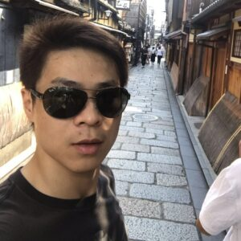

Junjie Hu (胡君杰)Shenzhen Institute of Artificial Intelligence and Robotics for Society
Shenzhen, Guangdong, China
|
 |


Biography
I am currently a researcher at the Shenzhen Institute of Artificial Intelligence and Robotics for Society in Shenzhen, working with Prof. Tin Lun Lam. I got Ph.D in the Graduate School of Information Sciences, Tohoku University, supervised by Prof. Takayuki Okatani in 2020.
My research interest lies in computer vision and robotics, mainly including 3D vision, robot perception, SLAM, multi-robot perception, lifelong learning.
Please email me if you are interested in an internship or a research assistant position.
News
- [03/2023] Paper on multi-robot SLAM was accepted by ICRA'23.
- [02/2023] Paper on scene recognition was accepted by TIM'23.
- [02/2023] Paper on heterogeneous multi-robot catching was accepted by TRO'23.
- [12/2022] Survery on depth completion was accepted by TPAMI'22.
Publications
- Liguang Zhou, Yuhongze Zhou, Xiaonan Qi, Junjie Hu, Tin Lun Lam, Yangsheng Xu, “Attentional Graph Convolutional Network for Structure-aware Audio-Visual Scene Classification,” IEEE Transactions on Instrumentation and Measurement (TIM), February 2023. (Accepted)
- Yuan Gao, Junfeng Chen, Xi Chen, Chongyang Wang, Junjie Hu, Fuqin Deng, Tin Lun Lam, “Asymmetric Self-play Enabled Intelligent Heterogeneous Multi-robot Catching System using Deep Multi-agent Reinforcement Learning,” IEEE Transactions on Robotics (T-RO), February 2023. (Accepted)
- Junjie Hu, Chenyu Bao, Mete Ozay, Chenyou Fan, Qing Gao, Honghia, Liu and Tin Lun Lam. "Deep Depth Completion from Extremely Sparse Data." IEEE Transactions on Pattern Analysis and Machine Intelligence. (TPAMI 2022).
- Wenrao Pang, Qing Gao, Yinan Zhao, Zhaojie Ju, Junjie Hu. "BaSICNet: Lightweight 3D Hand Pose Estimation Network Based on Biomechanical Structure Information for Dexterous Manipulator Teleoperation." IEEE Transactions on Cognitive and Developmental Systems, 2022.
- Junjie Hu, Xiyue Guo, Junfeng Chen, Guanqi Liang, Fuqin Deng and Tin Lun Lam. "A Two-stage Unsupervised Approach for Low light Image Enhancement." IEEE Robotics and Automation Letters. (RAL, 2021).
- Xiyue Guo, Junjie Hu, Junfeng Chen, Fuqin Deng and Tin Lun Lam. "Semantic Histogram Based Graph Matching for Real-Time Multi-Robot Global Localization in Large Scale Environment." IEEE Robotics and Automation Letters. (RAL, 2021).
- Yan Zhang, Junjie Hu and Takayuki Okatani. "Extending Information Maximization from a Rate--Distortion Perspective." (Neurocomputing, 2020).
- Yanbing Bai, Junjie Hu, Jinhua Su, Xing Liu, Haoyu Liu, Xianwen He, Shengwang Meng, Erick Mas, Shunichi Koshimura. "PPM-SSNet: An Pyramid Pooling Module-based Semi-Siamese Network for End-to-end Building Damage Assessment from Satellite Imagery." (Remote Sensing 2020).
Journals
- Xiyue Guo, Junjie Hu, Hujun Bao, Guofeng Zhang. "Descriptor Distillation for Efficient Multi-robot SLAM." IEEE International Conference on Robotics and Automation. (ICRA 2023).
- Chenyou Fan, Junjie Hu, Jianwei Huang. "Private Semi-Supervised Federated Learning." International Joint Conferences on Artificial Intelligence (IJCAI 2022).
- Hualie Jiang, Laiyan Ding, Junjie Hu and Rui Huang. "PLNet: Plane and Line Priors for Unsupervised Indoor Depth Estimation." (3DV, 2021).
- Chenyou Fan, Junjie Hu and Jianwei Huang. "Few-Shot Multi-Agent Perception." ACM Multimedia 2021. (ACM MM, 2021).
- Fuqin Deng, Hua Feng, Mingjian Liang, Hongmin Wang, Yong Yang, Yuan Gao, Junfeng Chen, Junjie Hu, Xiyue Guo, Tin Lun Lam. "FEANet: Feature-Enhanced Attention Network for RGB-Thermal Real-Time Semantic Segmentation." 2021 IEEE/RSJ International Conference on Intelligent Robots and Systems (IROS, 2021).
- Junjie Hu, Yan Zhang and Takayuki Okatani. "Visualization of Convolutional Neural Networks for Monocular Depth Estimation." 2019 IEEE International Conference on Computer Vision. (ICCV 2019).
- Junjie Hu, Mete Ozay, Yan Zhang and Takayuki Okatani. "Revisiting Single Image Depth Estimation: Toward Higher Resolution Maps with Accurate Object Boundaries." 2019 IEEE Winter Conference on Applications of Computer Vision. (WACV 2019).
- Junjie Hu and Terumasa Aoki. "Non-rigid structure from motion via sparse self-expressive representation." 2017 IEEE International Conference on Image Processing. (ICIP 2017).
- Junjie Hu and Terumasa Aoki. "A Convex Approach for Non-rigid Structure from Motion Via Sparse Representation." the 12th International Joint Conference on Computer Vision, Imaging and Computer Graphics Theory and Applications. (VISIGRAPP 2017).
- Junjie Hu and Terumasa Aoki. "Improving the performance of non-rigid 3D shape recovery by points classification." 2017 Fifteenth IAPR International Conference on Machine Vision Applications. (MVA 2017).
Conferences
- Junjie Hu, Chenyou Fan, Liguang Zhou, Qing Gao, Honghai Liu, Tin Lun Lam. "Lifelong-MonoDepth: Lifelong Learning for Multi-Domain Monocular Metric Depth Estimation." arXiv preprint arXiv:2303.05050, 2023.
- Liguang Zhou, Junjie Hu, Yuhongze Zhou, Tin Lun Lam, Yangsheng Xu. "Peer Learning for Unbiased Scene Graph Generation." arXiv preprint arXiv:2301.00146, 2022.
- Junjie Hu, Chenyou Fan, Mete Ozay, Hua Feng, Yuan Gao, Tin Lun Lam. "Progressive Self-Distillation for Ground-to-Aerial Perception Knowledge Transfer." arXiv preprint arXiv:2208.13404, 2022.
- Junjie Hu, Chenyou Fan, Mete Ozay, Hualie Jiang, Tin Lun Lam. "Data-free Dense Depth Distillation." arXiv preprint arXiv:2208.12464, 2022.
- Junjie Hu, Chenyou Fan, Hualie Jiang, Xiyue Guo, Xiangyong Lu, Tin Lun Lam. "Boosting Light-Weight Depth Estimation Via Knowledge Distillation". arXiv preprint arXiv:2105.06143, 2021.
- Junjie Hu and Takayuki Okatani. "Analysis of Deep Networks for Monocular Depth Estimation Through Adversarial Attacks with Proposal of a Defense Method." arXiv preprint arXiv:1911.08790, 2019.
Preprints
Honors & Awards
-
Employee of the year, Shenzhen Institute of Artificial Intelligence and Robotics for Society, 2023 -
Best presentation award, Graduate School of Information Sciences, Tohoku University, 2019 -
Global Hagi Scholarship, Tohoku University, 2018 - 2020 -
Rotary Yoneyama Scholarship, 2016 - 2017
Professional Activities
-
Conference Reviews:
IEEE/RSJ International Conference on Intelligent Robots and Systems (IROS)
International Conference on Robotics and Automation (ICRA)
-
Journal Reviews:
IEEE Robotics and Automation Letters (RAL)
IEEE Transactions on Instrumentation and Measurement (TIM)
Neurocomputing
IEEE Transactions on Image Processing (TIP)